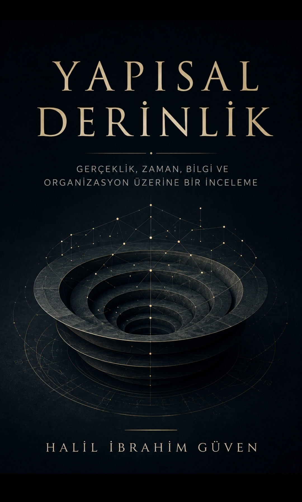

Time is not what you think.

Structural Depth
Ω: Foundation | Θ: Deterministic
The definitive foundational text of Structural Depth Theory (SDT). Constructs a complete architectural model of reality, information, and organization by replacing stochastic uncertainty with rigid containment geometry and structural determinism.
Bridge Note: The supreme anchor of the entire research program. It establishes the absolute physical and philosophical constraints from which all subsequent layers (Law, Extraction, and Engine) are derived.
 ...
...
The Place of Time
Ω: Undefined | Θ: Absolute
Axiom: Time is not a fundamental independent parameter or a continuous flow; it is the macroscopic visibility of structural depth differentiation. The arrow of time is defined strictly by hierarchical containment mechanics.
Bridge Note: This text establishes Layer I. It abstracts the system away from temporal metrics, repositioning "price" and "states" as recordings of underlying structural configurations rather than stochastic processes.
The chronological parameters within these volumes are derived from rigorous structural trajectory analysis. Transitions are mapped to render the system's geometric shifts observable.

The Condensation Point
Ω: Observable | Θ: Emerging
Examines the critical mathematical thresholds where a system transitions from unconstrained disorder into rigid organization. Models the localization of energy configurations before phase shifts.
Bridge Note: Focuses on extraction. Instead of predicting future states, it demonstrates how directional vectors are extracted when the state-space volume begins to condense under constraints.

Liquidation — The Market Alchemy Framework
Ω: Suppressed | Θ: Increasing
Formalizes structural liquidation mechanics. Analyzes systemic evacuation protocols and thermodynamic information collapse when feedback loops suppress available degrees of freedom.

Liquidation
Ω: Suppressed | Θ: Increasing
Complete international edition of the architectural liquidation framework, optimized for systemic risk models and non-linear state compression tracking.
Bridge Note: The operational engine layer. Maps how forced execution zones emerge deterministically from structural constraints rather than stochastic probability.
SYSTEM STRUCTURE MATRIX
LAYER I — LAW
Price is a frozen record of system configuration behavior.
LAYER II — EXTRACTION
Directional invariants are extracted via state-space collapse, never predicted.
LAYER III — ENGINE
Systemic execution decisions emerge exclusively from deterministic structural states.